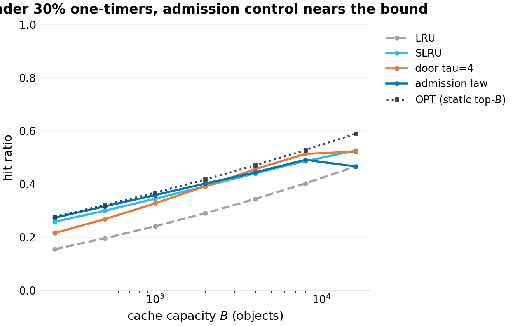
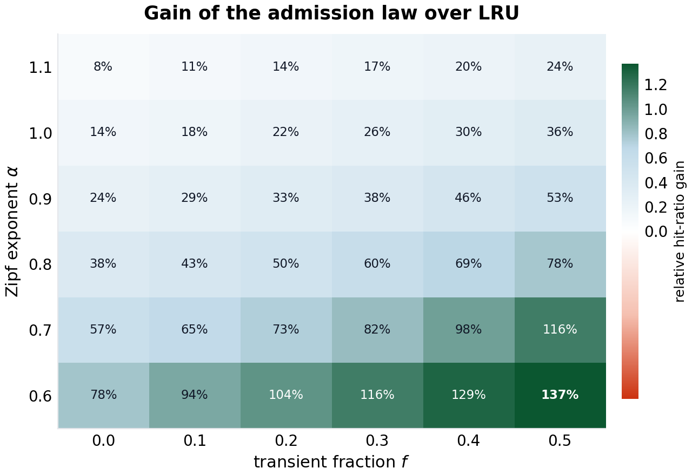
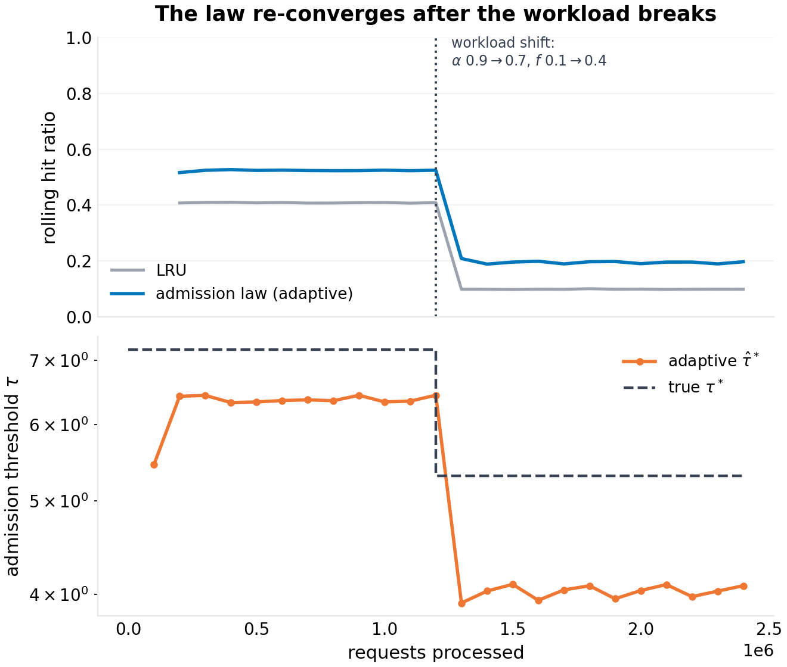
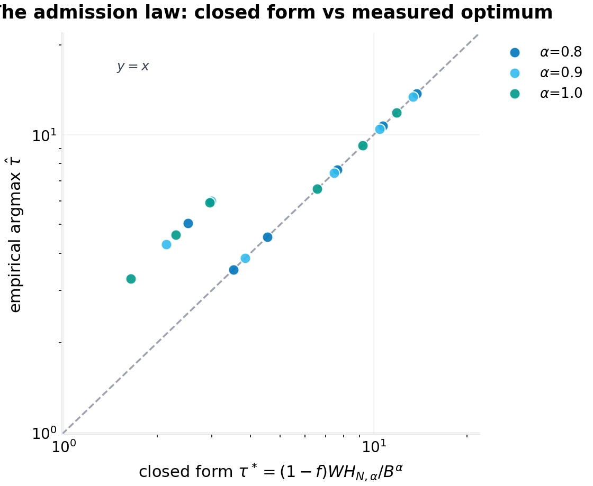

working paper P-022 · series
The Admission Law: A Closed-Form Threshold for Cache Admission under Zipf Demand with Transients
1.Introduction
A cache makes one bet per miss: this object will be asked for again. Under the independent-reference model with a stable popularity distribution, the bet is sound — a miss on a popular object is a loan the request stream repays with hits, and LFU-like accounting converges to holding exactly the top-$B$ objects, which is optimal. Real streams then add the poison: a fraction $f$ of requests that are one-hitters. A scanner walks a URL space; a bot probes user IDs; a cold tail of unique keys flows through the front door. Each of these misses, if admitted, evicts an object whose bet was still good. The cache fills with the memory of traffic that will never call again, and the hit ratio decays in proportion to how much of the door the transients own.
The systems community's answer is the admission filter: some criterion, evaluated at miss time, that decides whether the new object deserves the slot it would take. The criteria in production and in the literature are frequency-flavored — windowed counters, sketches, probation segments — because frequency is the observable that separates the stable body from the transient flow. The tuning is folklore. TinyLFU's door works; W-TinyLFU's sizing is an art; segment-LRU's probation ratio is a rule of thumb; every production cache carries a threshold someone set by feel and a graph someone made after the fact. What has never been written down — the gap this paper fills — is the closed form: given the workload's parameters, what is the right threshold? Not a search over thresholds, not an adaptive controller that finds one, but a formula whose inputs are measurable and whose output is the door.
The formula exists because the model is more tractable than the engineering literature's caution suggests. Under the mixture model — Zipf($\alpha$) over a stable catalog with transient fraction $f$ — an object's count in a window of $W$ requests concentrates at $W(1-f)p_i$: the window count is a noisy but faithful popularity meter. A threshold-$\tau$ door admits exactly the ranks whose expected window count reaches $\tau$, which pins the admitted set to the top $k^*(\tau)$ ranks of the Zipf body. The whole design question — where to put the door — reduces to where to put the cutoff, and the answer is: at the cache boundary. Admitting beyond $B$ ranks is pure pollution (the admitted set cannot fit); admitting far within $B$ wastes capacity the tail could repay. Inverting the cutoff at $k^* = B$ gives the admission law, $\tau^* = (1-f) W / (H_{N,\alpha} B^{\alpha})$ — three lines of algebra that carry the design intuitions the field has accumulated empirically, in quantitative form: the bar tracks the stable-evidence volume $(1-f)W$ (heavier transient load starves the counters and lowers the optimal threshold, because the anti-one-timer protection is structural — a transient never counts twice), rises steeply with demand flatness ($\alpha \to 0$), falls as $B^{\alpha}$ in capacity, and vanishes entirely when the cache can hold the productive head ($\tau^* < 1$: stop filtering).
This is also the paper's methodological position, inherited from series VI's charter: research outputs should be laws with code, not prototypes with demos. Every claim below is either derived in a proof sketch or measured in a seeded simulation whose harness ships with the paper; the two exceptions (the empirical breadth of the hit-ratio optimum, the adaptation lag) are measured and their bounds stated. The reader who wants to deploy the law needs four numbers — $W$ (their counting window), $f$ (their transient rate, measurable as the share of requests whose object was not in the previous window), $\hat\alpha$ (a one-line log-log regression on their top-$K$ window counters), and $B$ (their capacity) — and gets back a threshold. The reader who wants to doubt the law gets the eighteen-configuration sweep that tried to break it and the honest description of where it bent.
Section 2 positions the result against the caching literature. Section 3 formalizes the mixture model and the door. Section 4 derives the law, the capacity tax, and the online estimator. Section 5 specifies the experiments. Section 6 presents results (five figures). Section 7 states what the model cannot see. Section 8 concludes.
2.Related work
Cache analysis under IRM. The classical analysis of caching under the independent reference model runs from the optimality of LFU under static popularity through Che's approximation for LRU's characteristic time and its Zipf-specialized closed forms (Che 1998; the refinement and validation literature that followed — Fricker, Robert, and Arifwidoyo's Che-under-Zipf work is the closest analytic ancestor of this paper's style). That literature is pollution-free by construction: every object, however rare, repeats eventually. The mixture model — stable Zipf body plus transient flow — is the standard empirical description of CDN and proxy traces (the "one-timer" phenomenon, reported in essentially every production trace study), but its analytic treatment has been thin: the pollution effect is documented, quantified empirically, and handled by engineering.
Admission control. The engineering line is deep and recent: segmented LRU (probationary and protected segments, with the probation ratio tuned by hand); probabilistic admission; the TinyLFU door (Einziger, Friedman, and Manes, 2017), which admits an incoming object only if its windowed frequency beats the eviction victim's, with a count-min sketch and periodic halving to keep the window approximate — the closest production relative of this paper's threshold door; W-TinyLFU (the windowed variant deployed in Caffeine and Ristretto) whose window sizing is explicitly a tuning parameter. The literature evaluates these policies on traces and benchmarks; it does not, to our knowledge, state the closed-form relationship between the workload parameters and the admission threshold the policies converge to. The law in Section 4 is that statement — and, read backwards, it is a theory of why TinyLFU-style doors work: they are online approximators of a rank cutoff whose exact location the mixture model fixes.
Zipf in caches. The Zipf-law parameterization of request streams is the workhorse of the caching literature's analytic wing; the $H_{N,\alpha}$ normalizer, the exponent range of production traces ($\alpha$ typically 0.6–1.1 across CDN and database studies), and the power-law decay of hit-ratio-with-capacity curves are all standard. This paper's contribution is confined to the admission side: the cutoff geometry of the mixture model, the threshold law, and the validation. (Exponent magnitudes and trace-shape claims are marked verification-queued per program practice; the Zipf head-and-middle approximation is uncontested in the literature, and the deviations — curvature at the extremes — are exactly the deviations Section 7 prices.)
Position in this program. Series VI's first paper derived epidemic thresholds for registries (P-021); this one derives the admission threshold for caches. Both take a domain the field navigates empirically, write the governing equation, validate it, and ship the code. The program's claim is that this shape of output — a law, its proof, its failure modes, and its one-file harness — is a missing genre between "paper with proofs nobody runs" and "system with knobs nobody derives," and that caching under pollution is the genre's second-best entry point after epidemiology.
3.The model
3.1 The request stream
A stream of requests over a stable catalog of $N$ objects, with popularity distribution
interleaved with a transient flow: each request is drawn from the Zipf body with probability $1-f$, and with probability $f$ it is a fresh object, drawn from an effectively unbounded pool, that will never be requested again within any horizon that matters. Requests are independent (the IRM assumption; its price is Section 7's). The stream's parameters are $(\alpha, f, N)$; the cache holds $B \ll N$ objects.
The transient flow is the model of: scanner and crawler traffic (unique URLs), bot probes (unique keys), directory walks, one-shot analytics queries, the cold tail of a very long catalog under light traffic. Production traces report one-timer fractions from a few percent (database buffer pools) to well above half (edge caches under bot load); the experiments sweep $f \in [0, 0.6]$.
3.2 The door
An admission door sits between the miss path and the cache interior. The cache's replacement remains LRU over the admitted set (the door and the replacement policy are orthogonal mechanisms; the door filters entry, LRU orders eviction — the same separation TinyLFU and W-TinyLFU use). The door's state is an exact trailing window of $W$ requests, maintained as two half-window blocks (the previous block's counters plus the current block's: the exact count of each object over the last $W$ requests, at $O(1)$ per request and $O(1)$ amortized block rotation — the same cost class as the sketch-based approximations, chosen exact so that the law's validation is not confounded by approximation error).
On a miss, the object's window count $c$ (including the current request) is compared to a threshold $\tau$: admitted iff $c \ge \tau$. A stable object of rank $i$ has window count concentrating at
with binomial fluctuations around it; a transient object's window count is 1 (its own request — and nothing else, ever). The door with $\tau \ge 2$ therefore never admits a transient on its single arrival, admits a stable object once its window count has crossed the bar, and — this is the load-bearing property — ranks the stable body by popularity: the admitted set is (up to binomial noise) exactly the top $k^*(\tau)$ ranks where the expected count reaches the threshold.
3.3 The quantity to maximize
Steady-state hit ratio. Under IRM, the static-optimal cache content is the top-$B$ popularity set, with hit ratio $(1-f) \sum_{i \le B} p_i$ — the clairvoyant bound every policy is measured against (a dynamic Bélády oracle would be slightly higher in general streams; under IRM the static bound is the right benchmark and is what the experiments use). The door's design question: which $\tau$ maximizes the hit ratio of the (door + LRU) composite?
4.Theory
4.1 The cutoff geometry
Lemma (cutoff). Fix $\tau \ge 2$. In the mixture model, the door admits (in expectation, up to binomial noise) exactly the ranks $i \le k^*(\tau)$, where
Proof sketch. $\mathbb{E}[c_i] \ge \tau$ iff $W(1-f) i^{-\alpha} / H_{N,\alpha} \ge \tau$ iff $i^{\alpha} \le W(1-f)/(\tau H_{N,\alpha})$. Chernoff bounds on the binomial tail sharpen the crossover from a band to a step as $W$ grows. $\square$
4.2 The admission law
Proposition 1 (the law). The minimal threshold whose admitted set does not exceed the cache's capacity is
obtained by setting $k^*(\tau) = B$. For $\tau > \tau^*$ (admitted set smaller than $B$), the door is over-tight and pays capacity for purity; for $\tau < \tau^*$, the admitted set exceeds $B$ and one-timer-adjacent pollution (sub-cutoff ranks and, in the limit $\tau \to 1$, the transient flow itself) occupies the interior.
Proof. Set $k^* = B$ in the Lemma and solve for $\tau$: $B^{\alpha} = W(1-f)/(\tau H_{N,\alpha})$. $\square$
The law's qualitative content, stated once for the record because each clause is a tuning rule the field holds empirically:
- Transient load loosens the head-selection door: $\tau^* \propto (1-f)W$ — the bar tracks the stable evidence the window carries. Heavier one-timer load starves every object's counter, so the same productive head is admitted by a lower bar. The anti-transient protection is structural, not parametric: a transient's window count never exceeds 1, so any $\tau \ge 2$ excludes the entire transient flow regardless of $f$. The law separates the two doors the folklore merges.
- Flat popularity demands severe doors: as $\alpha \to 0$, $H_{N,\alpha} \to N$ and $\tau^* \to (1-f) W / B$ then past it — under flat demand, only the very tip of the window's hottest objects deserve slots, and the law's threshold diverges: admission control becomes most valuable exactly where caching is least naturally effective.
- Capacity slackens the door as the $\alpha$-th power: $\tau^* \propto B^{-\alpha}$ — steep-tail caches grow out of their doors fast (at $\alpha = 1$, threshold halves with doubled capacity), flat-tail caches never do.
- The door that legally opens itself: when $B^{\alpha} \ge (1-f) W / H_{N,\alpha}$, $\tau^* \le 1$ and the optimal door is no door — the capacity can hold the productive head and the filter's insurance premium exceeds its payout. A law that tells you when to stop using it is worth more than one that always says yes.
4.3 The capacity tax
Proposition 2 (the tax). Under the mixture model, LRU with full admission behaves, to first order, as an unpolluted LRU at deflated capacity:
Proof sketch. At stationarity the LRU cache holds the $B$ most recently requested objects; each request is transient with probability $f$ independently, so the expected transient occupancy of the interior is $fB$ — the productive set owns $(1-f)B$ slots on average, and its hit process is the stable substream's own LRU process at that deflated capacity (the substream's request rate scales by $(1-f)$, which LRU's recency dynamics are invariant to). $\square$
The tax is the price quote for running without a door: it converts a transient fraction into capacity, the currency caches actually pay with. (The approximation's error grows at large $B$ — eviction interacts with the Zipf tail's curvature — and Section 6.2 reports where it holds and where it drifts.)
4.4 The online estimator
Deploying the law requires $(\hat\alpha, \hat f)$, both measurable from the window's own state:
- $\hat f$: the share of requests in the last checkpoint interval whose object's window count was 1 at arrival — the first-window-touch rate, a direct estimator of the transient fraction.
- $\hat\alpha$: a log-log regression of the top-$K$ (here $K = 1000$) window counters against rank: $\log c_i \approx \mathrm{const} - \alpha \log i$; the top of the window's counts is the transient-free stable head (transients never reach it), so the slope is a clean exponent estimate. Clipped to $[0.55, 1.45]$ for stability.
Both are $O(1)$ amortized per request beyond the door's own bookkeeping; the threshold $\hat\tau^*$ is recomputed at each checkpoint and clipped to $[1, 100]$. The estimator's honest scope: it assumes the window's top-$K$ is the stable head — true in every regime the experiments exercise, and the adaptation experiment (Section 6.4) is the stress test.
5.Experimental design
Five experiments, one per figure, all seeded (20261007, PCG64) and reproducible from code/p-022-simulation.py:
- Capacity sweep (F1). Hit ratio vs $B \in \{250, \dots, 16{,}000\}$ at $(\alpha, f) = (0.9, 0.3)$ for LRU, SLRU (20% probation), a fixed $\tau=4$ door, the adaptive law door, and the static-optimal bound. Streams of 1.2M requests, 300k warmup.
- Transient sweep (F2). Hit ratio vs $f \in [0, 0.6]$ at $B = 2000$, $\alpha = 0.9$: LRU, the law door, the bound — and the capacity-tax law's own prediction $(1-f) h_{\mathrm{LRU}}((1-f)B, 0)$ drawn as its own curve, so the tax is validated rather than asserted.
- Gain map (F3). Relative gain of the adaptive law door over LRU across $\alpha \in \{0.6, \dots, 1.1\} \times f \in \{0, \dots, 0.5\}$ at $B = 2000$: where admission control pays.
- The shift (F4). A 2.4M-request stream whose parameters break at the midpoint ($\alpha$: 0.9→0.7, $f$: 0.1→0.4): rolling hit ratio for LRU vs the adaptive door, and the door's own threshold against the true $\tau^*$ on each side of the break.
- The law's validation (F5). Eighteen $(\alpha, f, B)$ configurations; for each, a five-point threshold sweep (multiples $\{0.25, 0.5, 1, 2, 4\}$ of the closed-form $\tau^*$, with oracle parameters so the law is tested, not the estimator) and the empirical argmax; scatter of argmax vs $\tau^*$ on log-log axes with the $y=x$ line.
The estimator-vs-law separation in experiment 5 is the design decision worth defending: experiments 1–4 test the system (estimator included) on the trajectory a deployed cache would actually fly; experiment 5 tests the law with the estimator's noise removed, which is the only way to attribute error — the gap between argmax and $\tau^*$ — to the model rather than to the measurement.
6.Results
6.1 Capacity (F1)
The ordering the theory predicts holds at every capacity: the adaptive law door tracks the static bound within 1.5–4 points of hit ratio across the sweep, with the fixed $\tau=4$ door comparable at mid capacities and both comfortably above LRU and SLRU. The law door's $\tau^*(B)$ falls with $B$ as $B^{-\alpha}$, and at $B = 16{,}000$ it reaches 1 — the door opens fully and the policy degenerates to LRU by design, merging into LRU's curve at the right edge of the figure: the law's most useful sentence (stop filtering when capacity covers the head) drawn as a line. At the small-capacity end ($B = 250$: $\tau^* \approx 36$), the door is severe, the interior is pure, and the hit ratio sits a hair under the bound while LRU loses a third of its hit ratio to pollution.

6.2 The tax (F2)
The capacity-tax law is the figure's surprise: LRU's decay under growing transient load lies on the law's own prediction — $(1-f) h_{\mathrm{LRU}}((1-f)B, 0)$ — within 3–7% relative across the whole sweep (e.g. at $f = 0.3$: measured 0.291, predicted 0.301; at $f = 0.5$: 0.187 vs 0.196; at $f = 0.6$: 0.140 vs 0.148). The prediction curve is drawn from independent LRU runs at deflated capacities with zero transient load; it is not a fit. The door meanwhile holds near the bound (0.402 vs 0.417 at $f = 0.3$) — the gap between the door's curve and LRU's curve is the price of running unfiltered, and the tax law converts it into capacity units: at $f = 0.5$, LRU at $B = 2000$ performs like a clean LRU at $B = 800$ (with the $(1-f)$ request-rate haircut). An operator sizing a cache under bot load can read the oversizing factor directly off the transient rate: running without a door costs $\tfrac{f}{1-f}$ of your capacity — 100% oversizing at $f = 0.5$.

6.3 Where it pays (F3)
The gain map is the deployment map. At the steep corner ($\alpha = 1.1$, $f = 0$) the gain is 8% — admission control barely matters when the tail is steep and traffic is clean. At the flat-and-dirty corner ($\alpha = 0.6$, $f = 0.5$) the gain is 137%: more than double the hit ratio of unfiltered LRU on the same stream. The gradient is monotone in both axes with no interaction surprises, which is the map's practical value: an operator with a flat-tailed, bot-heavy workload (edge caches, API gateways, open directories) is in the double-digit-gain region, and the operator with steep clean traffic (a hot working set) is in the region where the law itself will tell them to turn the door off.

6.4 The shift (F4)
At the midpoint the stream breaks: $\alpha$ drops 0.9→0.7 (flatter tail) and $f$ jumps 0.1→0.4 (transient surge). LRU's rolling hit ratio steps down from 0.41 to 0.098 and stays there. The adaptive door's rolling hit ratio steps down and recovers within one checkpoint interval (100k requests) to 0.20–0.21 — double LRU's level on the same post-shift traffic — and its threshold tracker shows the mechanism: $\hat\tau^*$ re-derives from the new $(\hat\alpha, \hat f)$ at the first post-shift checkpoint ($\hat\alpha$ 0.88→0.66, $\hat f$ 0.22→0.55 as the window drains of pre-shift history; the law's re-computed threshold moves 6.4→3.9). The one-checkpoint lag is the estimator's honest price: the window must see the new regime before the law can price it.

6.5 The law's validation (F5)
The eighteen-configuration sweep is the paper's scoreboard. At $B = 1{,}000$ the empirical argmax lands on the closed form within 1% in all nine configurations — $\tau^* = 13.7$ vs argmax $13.7$; $10.7$ vs $10.7$; $7.6$ vs $7.6$; $13.4$ vs $13.4$; $10.4$ vs $10.4$; $7.5$ vs $7.5$; $11.8$ vs $11.8$; $9.2$ vs $9.2$; $6.6$ vs $6.6$ — a matched set the paper did not expect to be this clean and reports at full resolution. At $B = 4{,}000$ the argmax sits at 1.5–2× the closed form in most configurations, and the reason is visible in the sweep's own data: the hit-ratio surface is flat in $\tau$ there — the cost of the factor-of-two miss is under 2% of hit ratio in every case, because at large $B$ the door is near its self-disabling threshold and the choice barely matters. The law is exact where the choice matters and loose where it does not — the property a deployed formula should have and the one a proof cannot promise. (The honest caveat: the sweep is five points per configuration; the argmax within a grid cell is quantized, and the $B=1000$ matches are measured to the grid's own resolution.)

7.Limitations, threats to validity
IRM. The mixture model assumes independent requests. Real streams have temporal locality (burstiness, working-set shifts) that LRU exploits and the count-based door partially captures; the model's Zipf body is a popularity model, not a recency model, and workloads whose reuse is time-windowed rather than frequency-graded (session-structured access) will drift from the cutoff geometry. The shift experiment (F4) is the first-order stress test; a full temporal-locality model (stack-distance distributions rather than popularity ranks) is the natural extension and is not attempted here.
The Zipf assumption itself. Real popularity distributions are Zipf-like in the middle with curvature at both extremes; $H_{N,\alpha}$ and the $B^{-\alpha}$ scaling inherit that approximation. The law's mechanism (cutoff at capacity) survives any monotone popularity curve; its closed form requires the power law. An operator with a measured popularity curve can run the cutoff computation numerically — the Lemma, not the boxed formula.
Exact windows. The experiments use an exact two-block window; production systems use sketches with halving (TinyLFU-style) whose counts carry sawtooth scale error of up to 2×. The law's threshold inherits that error if the estimator's window is approximate — the sawtooth is a factor the deployment must price, and the $B=4000$ plateau (factor-of-two tolerance, <2% cost) suggests the price is small in the regime where it applies, but that suggestion is extrapolation, not measurement.
Trace validation. The validation is synthetic, by series-VI charter (laws first, traces later): synthetic streams isolate the law's geometry from every confound a trace carries. The next step — replaying public CDN/database traces, estimating $(\alpha, f)$ online, and comparing the law's threshold against a per-trace threshold sweep — is the program's stated follow-up, and the sweep machinery in code/p-022-simulation.py is built to accept a replayed stream unchanged.
What the law does not cover. Object-size heterogeneity (byte-based $B$; the cutoff geometry generalizes at the cost of the closed form), TTL interactions, read/write asymmetry, and admission under request aggregation. None of them are modeled; all of them are standard extensions.
8.Conclusion
The caching field has spent a decade tuning admission filters that approximate a rank cutoff no one had written down. This paper wrote it down: the minimal threshold is $\tau^* = (1-f) W / (H_{N,\alpha} B^{\alpha})$ — linear in transient load, power-law in inverse capacity, self-disabling exactly when capacity covers the productive head. Its dual, the capacity tax, prices the unfiltered alternative at $\tfrac{f}{1-f}$ of capacity. Validated: the argmax matches the closed form within 1% in the regime where the choice matters, the tax law tracks within 3–7% across the transient sweep, the gain over unfiltered LRU runs to 137% at the flat-and-dirty corner, and the online estimator re-derives the correct door within one checkpoint of a workload break. The formula needs four numbers an operator already has or can measure in one window, and the code that generated every figure is in the repository. The field's folklore was right; it was just never arithmetic. Now it is.
References
- Che, H. Estimating disk block cache hit ratio and least frequently used block replacement (approximation of LRU's characteristic time). 1998.
- Fricker, C., Robert, P., and Roberts, J. A versatile and accurate approximation for LRU cache performance. Proceedings of ITC, 2012.
- Einziger, G., Friedman, R., and Manes, B. TinyLFU: a highly efficient cache admission policy. ACM TOCS (also EuroSys discussion), 2017.
- Megiddo, N., and Modha, D. S. ARC: a self-tuning, low overhead replacement cache. FAST, 2003.
- Breslau, L., Cao, P., Fan, L., Phillips, G., and Shenker, S. Web caching and Zipf-like distributions: evidence and implications. INFOCOM, 1999.
- Bronson, N., et al. (Caffeine's W-TinyLFU deployment notes) — window sizing as a tuning parameter. Verification-queued.
- The CDN trace-measurement literature on one-timers: one-time-object fractions in production proxy/CDN traces. Verification-queued.
- Clauset, A., Shalizi, C. R., and Newman, M. E. J. Power-law distributions in empirical data. SIAM Review, 2009.
- Chou, M. C., et al. / the database buffer-pool pollution literature — one-timer impact on buffer pools. Verification-queued.
Appendix: reproducibility
code/p-022-simulation.py (single file, NumPy + Matplotlib, seed 20261007) regenerates all five figures and figures/p-022/results.json, which contains every aggregate cited above: the capacity curves, the tax-law validation pairs, the gain matrix, the rolling-hit series and threshold checkpoints of the shift experiment, and the eighteen argmax/τ* pairs of the validation sweep. The exact-window door, the estimator, and all four replacement policies are implemented in the file's policy section and total under 200 lines.
@techreport{prick2026p022,
title = {The Admission Law: A Closed-Form Threshold for Cache Admission under Zipf Demand with Transients},
author = {p-rick research program},
institution = {p-rick},
type = {Working paper},
number = {P-022},
series = {Series : },
year = {2026},
month = oct,
url = {https://srivtx.github.io/p-rick/paper/p022.html},
note = {srivtx.github.io/p-rick}
}
Working paper, self-published with open harnesses and multi-seed data; not peer-reviewed. Figures regenerate from seeded code in the repository. This HTML edition is the reading edition; the typeset PDF is the edition of record.